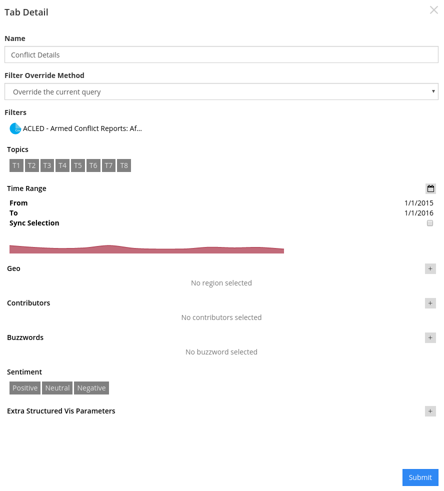

Analyzing Data¶
This chapter covers everything from interacting with your data once you’ve built a dashboard, to sharing out insights in multiple formats.
Filters¶
Every interaction in the dashboard essentially applies a filter on your data. This method is designed to help you access insights learned from your unstructured or structured data, and tie it to other dimensions.
When interacting, the filters you’ve applied will appear at the bottom of the page next to the name of the dataset the filter is applied to.
Clicking on the name of the filter will remove it.
Filters can also be saved to a dashboard and can be set on one of three levels:
Dashboard-Level Filters¶
To set a filter on the entire dashboard, click the  icon in the bottom left corner inside your dashboard. This is the “global” filter panel for your dashboard.
icon in the bottom left corner inside your dashboard. This is the “global” filter panel for your dashboard.
Filters set from here will not persist when you leave the dashboard.
Tab-Level Filters¶
Tab level filters can be applied on a per-tab basis. To do this, click the icon and select one of the two methods:
- Merge with the current query will allow you to set a permanent filter, but still interact with the data. Interactions with other tabs can still affect the data.
- Override the current query will apply the filter selections you make and freeze the visualizations so that the tab is no longer interactive. Selections on other tabs will not affect the data.
The main datapoints are available for selection from the Tab Detail page. Other datapoints can be accessed by clicking on the “+” icon next to Extra Structured Vis Parameters
Widget-Level Filters¶
Widget-level filters will override all other filters for that widget.
To apply a widget-level filter, you can either click on the funnel icon in the widget settings menu from your dashboard view, or you can apply a filter from the Create Your Own Widgets in the Options tab.
Widget Settings Menu